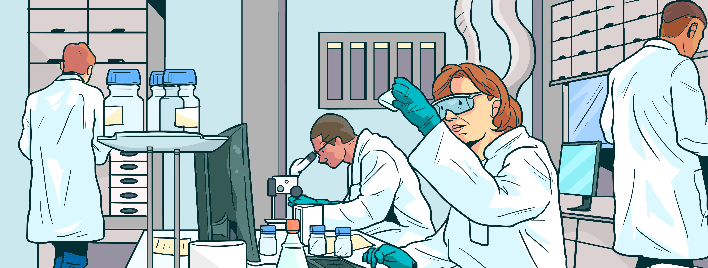

Atividades Clique
A seguir, vejamos alguns testes diagnósticos disponíveis, sem nos atermos a detalhes técnicos e metodológicos.
Clique no símbolo de ++ para ampliar a explicação sobre o teste.
Testes Moleculares de Amplificação de Ácidos Nucleicos (TAAN/RT-PCR): confirmam a presença de material genético do vírus SARS-CoV-2 em amostras coletadas na região do nariz e/ou da garganta utilizando um swab nasal (cotonete longo). Considerado o método de referência (padrão-ouro) para o diagnóstico e rastreio da covid-19. O resultado sai em 24h. É realizado em pacientes sintomáticos e assintomáticos. Em pacientes infectados e sintomáticos, a amostra deve ser coletada até o 8º dia de início dos sintomas, preferencialmente entre o 3º e o 7º dia.
Teste Rápido de Antígenos (Ag-RDT): detectam partículas do vírus presentes em amostras coletadas do nariz e da garganta. Indicado para pessoas que apresentam os sintomas da doença e utilizado quando os testes de TAAN/RT-PCR não estão disponíveis. Resultado dentro de 15 a 30 minutos da realização. Não recomendado para pacientes assintomáticos. A amostra deve ser coletada, preferencialmente, entre o 2º e o 7º dia de início dos sintomas.
Testes sorológicos (detecção de IgG e IgM): os métodos sorológicos são desenvolvidos para detecção de anticorpos IgG e IgM. O IgM é uma partícula grande, formada mais rapidamente e, quando detectável, indica que o corpo está formando imunidade contra uma infecção recente. Enquanto o IgG consiste em partículas pequenas que indicam uma imunidade decorrente de uma exposição prévia à doença (no caso a covid-19).